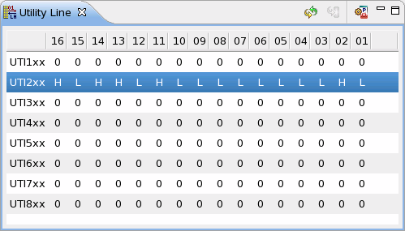
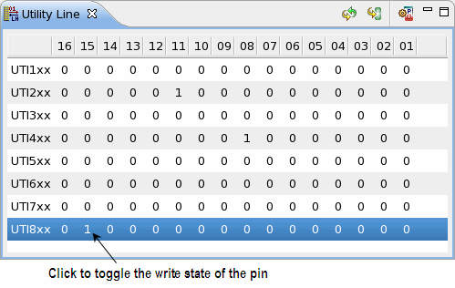
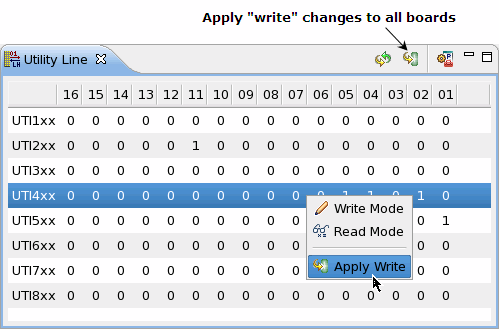

Using the Utility Line View
There are two write states for utility lines:
- Write state 1 sets the output level to Low. If used for controlling a user relay on the DUT board, the user relay will be on.
- Write state 0 sets the output level to High. If used for controlling a user relay, the user relay will be off.
Querying the write state of utility line pins
- Select the utility blocks you wish to query.
- Right-click and select Write Mode to query the write state of the
pins in the selected block (this corresponds the firmware command UTOT?).Note To query the states for all utility line blocks, you can use the Refresh icon at the top of the Utility Line View. When you click this icon, the write states are queried and the display is updated for all of the utility blocks that are currently shown in their write state in the Utility Line view. Likewise, the read states are queried and the display is updated for all of the utility blocks that are currently shown in their read state in the Utility Line view.
Querying the read state of utility line pins
- Select the utility blocks you wish to query.
- Right-click and select Read Mode to query the read state of the pins in the selected block (this corresponds to the firmware command UTIX?).
The figure below shows the read state query result for utility block UTI2.
There are two read states for utility lines:
- TTL High state, represented by H
- TTL Low state, represented by L
Note that the Utility Line View displays the read states using L (TTL Low) and H (TTL High). L corresponds to read state 1 in the standard test method and firmware command (where negative logic is used), and H corresponds to read state 0 in the standard test method and firmware command (where negative logic is used).
(For the write states, negative logic is used in standard test method and firmware commands and in the Utility Line View.)

Changing the write state of utility pins
To set the write states of a particular utility line block, perform the following steps:
- In the Utility Line View, select the utility block that you want to set.
- To change the write state of a particular pin in the selected utility block, click the
character that represents the current write state of the pin. This toggles the write state to
the opposite state.Note If you use a utility line to monitor the input level by querying the read state, set the write state of the utility line to 0.

Note If you change the write settings of a utility block, you must apply the settings using Apply Write as described below. If you query the read or write state of the block before applying your new settings, you will lose the changes you have made. However, if you enable the automatic refresh of the display, your changes to utility line write settings are immediately applied. In this case, you do not need to perform the following steps. For information about enabling the automatic refresh see Utility Line preference page. - After you have changed the write states of the utility line block as needed, right-click and
select Apply Write to apply the write-state settings to the
selected block (this corresponds to the firmware command UTOT). If
you have made changes to more than one utility block, you can click the Apply
"write" changes to all boards icon at the top of the Utility Line View to apply
the changes to all of the utility line blocks at once.

Functional changes
- Introduced before SmarTest 6.3.2